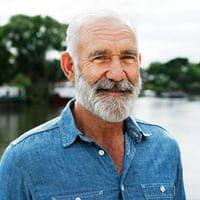
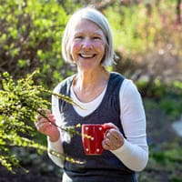
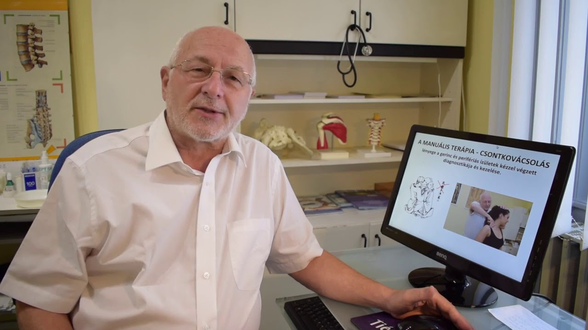
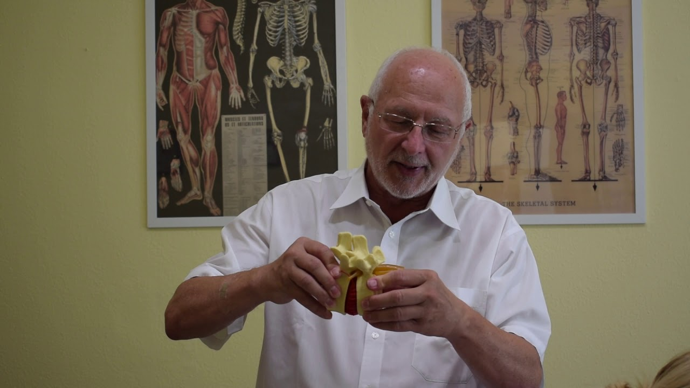
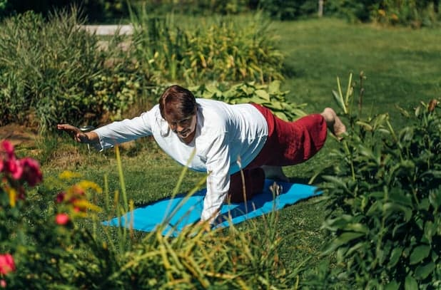
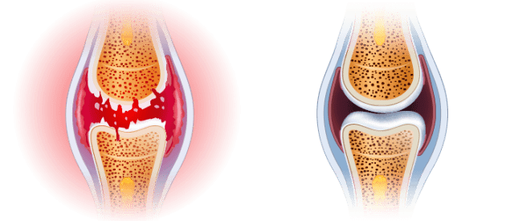
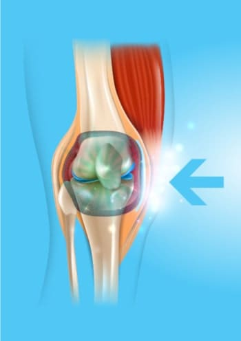

Sāpju ceļos un mugurā dēļ es varēju paiet ar grūtībām. Tabletes, šprices un operācijas mani
pilnīgi neietekmēja. Gluži pretēji: tās atņēma man naudu un enerģiju. Es nezināju ko darīt. Par
laimi, es uzzināju par šo līdzekli. Cik labi, ka es to izdarīju! Es sāku justies labāk no pirmās
lietošanas reizes. Apmēram mēnesi es jūtos kā no jauna piedzimusi. Es ilgi
pastaigājos un strādāju dārzā, kuru mēs ar mazmeitiņu esam iekopušas. Esmu aizmirsusi par sāpēm.
Paldies!
★ ★ ★ ★
★
Poļina Volkonska, 73 gadi
Vienkārši un efektīvi
Grūti noticēt, ka šāda vienkārša metode ir tik efektīva, jālieto vien līdzeklis - un pēc dažām
dienām var izbaudīt kustības bez diskomforta. Mana māsa, mani brālēni un es to lietojam un
iesakām to visiem. Ardievas locītavu diskomfortam.
★ ★ ★ ★ ★
Sāra Cīrule, 67 gadi

Jūtos vajadzīgs.
Smaga darba gadi uzņēmumā un jūtami apskādējuši manus ceļus. Apsolīju mazbērniem, ka spēlēšu ar
viņiem futbolu vai vizināšos ar riteni, bet sāpju dēļ nevarēju. Bērni to nesaprata un uztraucās.
Es jutos nevajadzīgs. Līdz mana meita man lika izmēģināt . Es uzreiz sajutu starpību. Ir
pagājis mēnesis, kopš to lietoju, un es jūtos neievainojams, tagad varu pavadīt laiku ar savu
ģimeni, it īpaši ar mazbērniem, kā agrāk.
★ ★ ★
★ ★
Ernests Ratkēvičs, 67 gadi
Esmu atgriezis sev dzīvi.
Lielais svars un ilgstošs darbs stāvus sagrāva manus ceļus, es nevarēju izturēt sāpes, tādēļ
dzēru vairāk kā 10 tabletes dienā. Bet es jutos kā apdullusi un miegaina, nevarēju normāli
dzīvot. Par laimi, darba kolēģe man ieteica šo apbrīnojamo produktu. Tas izrādījās ideāls
risinājums. Sāpes brīnumainā kārtā izgaisa, un es atkal aizrāvos ar friziera darbu. Es atgriezu
sev veselību, kas man ļāva sākt treniņus un... Es zaudēju 10 kilogramus! Neticamas pārmaiņas.
★ ★ ★ ★
★
Sofija Ivanova, 43 gadi
Mana sieva pārstāja sūdzēties.
Mājās mana sieva vienmēr atrod priekš manis nodarbi: salabot krānu, pārvietot skapi vai kaut ko
nokrāsot. Kā es varu noliektie un saspringt, ja neesmu drošs par muguru? Kā arī par elkoņiem un
ceļiem. Par laimi ziede palīdzēja manam mugurkaulam un locītavām atjaunoties. Es
sajutu, ka zaudēju svaru, kurš man bija gadiem. Mana sieva pārstāja sūdzēties, ka es negribu
viņai mājās palīdzēt!
★
★ ★ ★ ★
Aleksandrs Muciņš, 67 gadi
Esmu atgriezies darbā
Iedomājieties, kā tas ir - nekustināt vienu roku. Tiešam, grūti? Tieši tas notika ar mani, jo
man sāpēja pirksti, rokas piepampa un drebēja. Esmu juvelieris, tas, ko daru - ir mans darbu un
mana kaislība. Man nācās aizvien biežāk slēgt manu mazo darbnīcu, tādēļ mājās naudas kļuva
aizvien mazāk. Es sāku meklēt locītavu atjaunošanas līdzekļu un man visur sacīja, ka labākais ir
šis produkts. Es izmēģināju, tam neticot, bet pēc 20 dienām manas rokas
bija veselākas, nekā pirms 10 gadiem. Es varēju atgriezties darbā!
★
★ ★ ★ ★
Dāvids Kalniņš, 55 gadi
Jauna dzīve par tik lētu cenu
Parasti, ja kaut kas ir efektīvs, tam ir jābūt dārgam. Tā bija ar manu personīgo masieri, kas
man izmaksāja četrpadsmit tūkstošus mēnesī un viņam bija jārada brīnums. Tomēr, pretēji, tas
visu padarīja vien sliktāku, manas locītavas un mugurkauls sāpēja vēl stiprāk. Kad mans svainis
man ieteica izmēģināt , es nodomāju, ka tas ir pilnīgas muļķības. Kā var
palīdzēt gels, kad it kā fenomenāls masieris man nepalīdzēja? Būtu jūs redzējusi manu seju, kad
sāpes pārgāja. Vienkārši brīnums!
★ ★ ★ ★
★
Eva Māliņa, 67 gadi

Vienīgā efektīvā metode
Es izmēģināju dažādas metodes, lai atbrīvotos no krakšķēšanas un sāpēm gūžās. Nekas nepalīdzēja.
Kas bija vel sliktāk, deģenerācija izplatījās uz mugurkaulu. Ar viss notika
pretēji. Es vairs neuztraucos par savu veselību, tādēļ, ka esmu vesela par
visiem 100%!
★
★ ★ ★ ★
Madara Cāzere, 59 gadi
Pēc 14 dienām jūs aizmirsīsiet par sāpēm locītavās un mugurkaulā -
efektu garantē neatkarīgi izmeklējumi

Labdien, Esmu profesors Marks Kronvalds, zinātnieks un speciālists molekulārās bioloģijas jomā. Šeit
velos jūs iepazīstināt ar lielāko mana mūža sasniegumu. Es esmu izstrādājis metodi, pateicoties kurai
jebkurš cilvēks var novērst sāpes, kā arī atjaunot locītavas un mugurkaulu, pie tam 100% atgriezt
kustīgumu tikai 14 dienu laikā.
Tā, ja vēlaties, BEZ ķīmiskiem un neefektīviem preparātiem:
Noņemt sāpes locītavās un mugurkaulā - sajust atvieglojumu uz reiz pēc metodes
pielietošanas;
Atjaunot un nostiprināt locītavas, cīpslas, muskuļus un mugurkaulu par 87%, lai tie
darbotos kā jauni;
Par 100% atgriezt fizisko veselību un nebaidīties kļūt par invalīdu;
Novērst kustību ierobežojumu un notirpumu locītavās un mugurkaulā, atgriezt kustību
komfortu un plūdenumu;
Aizsargāt savas locītavas un mugurkaulu no sairšanas un saglabāt absolūtu fizisko
veselību uz ilgiem gadiem;
Novērst deģenerāciju, iekaisumu un citu - mazināt sāpes un atgriezt kustību
komfortu;
Atjaunot organismu pēc lūzumiem, sastiepumiem un traumām;
Un, pateicoties tam - iegūt 3 reizes vairāk enerģijas un atkal baudīt
dzīvi!
Jums ir jāzina, kas to visu var sasniegt bez bīstamām operācijām, dārgas ārstēšanās, bezgalīgas
gaidīšanas rindā pie speciālistiem (kuri arī padodas, neprotot neko izdarīt...) un nerijot indīgas
ķīmiskās vielas (bīstamas aknām, kuņģim un nierēm)... un, visbeidzot, ieekonomēt tūkstošiem
euro. Ja vēlaties to visu izdarīt, jums ir jāizlasa tas, ko vēlos jums pateikt.

Nav nozīmes, cik jums ir gadu un cik ilgi jūs ciešat no sāpēm locītavās vai mugurkaulā. Nav nozīmes, vai
jūsu kauli čīkst 2 dienas vai 20 gadus. Pat ja ārsts jums ir pateicis, ka jūsu locītavas un mugurkauls
ir pilnīgi sairuši un jūs esat zaudējis visas cerības uz normālu dzīvi... Jums ir jāzina, ka jau
pēc 14 dienām jūs varēsiet izbaudīt kustīgumu par visiem 100%. Bez sāpēm!
Palūkojieties kādēļ mana metode ir alternatīva neefektīviem cīņas ar sāpēm locītavās
veidiem:
Noņem sāpes uzreiz pēc lietošanas, bet pēc 14 dienām novērš tās uz visiem
laikiem;
organismam nekaitīgs: makromolekulārā formula ir 100% dabīga gela veidā, kas
darbojas pilnīgā harmonijā ar cilvēka organismu.
atjauno pat visstiprāk bojātās locītavas un mugurkaulu tā, ka tie funkcionē kā
jauni, bez sāpēm;
tas ir viegli lietojams un katrs var iziet ārstēšanas kursu mājās patstāvīgi, tā
vietā - lai gaidītu ārstu pieņemamajās telpās un lūgtu palīdzību;
ļauj ieekonomēt tūkstošiem euro, tā vietā, lai tos tērētu dārgiem un neefektīviem
ķīmiskajiem preparātiem un terapijai.
Esmu izstrādājis dabīgu metodi, kas atjauno jūsu sairušās locītavas un mugurkaulu
Pateicoties tam, jūs aizmirsīsiet par sāpēm un bailēm no pilnīgas invaliditātes...
Visas problēmas, no kuram jūs ciešat vāju locītavu vai vāja mugurkaula dēļ, paliks pagātnē. Jūs pilnīgi
atbrīvosieties ne tikai no sāpēm, bet arī no stīvuma, spazmām un tūskām. Beidzot jūs varēsiet darīt visu
to, ko nevarējāt darīt sāpju dēļ.
Jūs varēsiet uzkāpt pa kāpnēm, noliekties, bez problēmām nēsāt mazbērnus uz rokām. Varēsiet mierīgi kopt
dārzu, pastaigāties, vizināties ar riteni, dejot! Un tas vis tādēļ, ka es spēju izstrādāt inovatīvu
formulu locītavu atjaunošanai un atgriešanai tām pilnīgu kustīgumu. Kā es to paveicu?
Es vēlējos glābt savu māti no invaliditātes
Saskaņā ar pēdējiem pētījumiem, katram trešajam Itālijas iedzīvotājam 36 - 95 gadu vecumā ir problēmas
ar locītavām un mugurkaulu. Šie cilvēki parasti neapzinās to, viņi uzskata, ka tas ir normāli, ka
dažreiz ķermenis sāp, tirpst vai krakšķ. Tomēr vairākums viņu vidū ir pakļauti būtiska skrimšļu
sabrukuma un deģenerācijas riskam, kas var izraisīt invaliditāti.
Diemžēl šī problēma skāra arī manu māti. Sākotnēji viņai bija grūti kāpt pa kāpnēm vai piecelties no
dīvāna. Bet pēc tam situācija pasliktinājās... Dārzs, kuru viņa ar tādu baudu kopa, sāka aizaugt ar
nezālēm, jo viņa viris nespēja to kopt. Viņa pārstāja mūs ielūgt uz ģimeniskām pusdienām. Viņa kļuva
aizvien ātrāk sadusmojama un skumja. Tad, sāpju ceļgalos, gūžās, mugurkaulā un elkoņos dēļ, viņa nespēja
pat nomazgāties.
Tas bija bīstami viņas dzīvībai!
Vissliktākais bija tas, ka viņas nekustīgums apdraudēja viņas dzīvību. Es nekad neaizmirsīšu to dienu,
kad es aizbraucu pakaļ mātei, lai aizvestu viņu pie gastroenterologa. Manai mātei bija vienkārši
jāpāriet pāri ielai un... viņu gandrīz notrieca mašīna! Sāpju dēļ viņa gāja ļoti lēni un pēkšņi viņas
celis kļuva tika nekustīgs un sāpīgs, ka viņa nevarēja paspert ne soli. Vadītāj
nobremzēja pēdējā brīdī...
Es biju pārskaities, kad ieraudzīju mātes somu, kas bija pilna ar plaši reklamētiem līdzekļiem
locītavām. Izrādījās, ka vina tos lietoja saujām. Tā kļuva skaidrs, kādēļ viņai ir kuņģa čūla,
problēmas ar aknām un citas kuņģa problēmas... Sieviete vēlējās kaut ko darīt, bet šīs
zāles ne tikai nelīdzēja, bet arī galīgi saindēja viņas organismu.
Kā es izgudroju nesairstošu locītavu "patentu"?
Man bija jāpalīdz mātei atgriezt locītavu veselība, un kopa ar to - veselība un dzīvesprieks. Es
vēlējos, lai viņa būtu lieliska vecmāmiņa maniem mazbērniem, tāpat kā viņa bija lieliska māte man. Tad
es nodomāju: "Vecais, tu taču esi zinātnieks! Tu esi piedalījies daudzu vielu atklāšanās, kuras
cīnās ar dažādām slimībām. Kādēļ gan tev neizstrādāt preparātu locītavu nostiprināšanai?" Un tā, es
uzsāku testus...
Gada laikā es veici intensīvus laboratoriskus pētījumus. Es testēju dažādas aktīvo vielu kombinācijas uz
savas mātes. Man ir jāatzīmē, ka tās visas bija 100% dabīgas un organismas nekaitīgas.
Mani iedvesmoja mūku augu receptes un es tās apvienoju ar pēdējiem sasniegumiem molekulārās bioloģijas
jomā. Zinātniskās zināšanas, ticība dabai un šķipsniņa veiksmes ātri deva augļus: es izgudroju unikālu
makromolekulāru formulu.
Es uzreiz sāku īstenot plaša mēroga izmēģinājumus. 98% efektivitāti apliecina lielākie
Eiropas un ASV zinātniskās izpētes institūti! Vēl testēšanas posmā mana makromolekulārā formula dabīgā
veidā atjaunoja locītavu un mugurkaula funkcijas tūkstošiem brīvprātīgo.
Apbrīnojami efekti
Manas mātes sāpes norima uzreiz pēc produkta ieņemšanas. Viņa bija priecīga, ka viņu vairs nemoka
pulsējošas sāpes ceļgalos. Bet tas bija tikai sākums. Pēc nedēļas viņas locītavas un mugurkauls pārstāja
krakšķēt un tirpt. Tad izzuda ceļu un elkoņu tūskas, pārgāja visi iekaisumi locītavās un mugurkaulā.
Mana mātes atgriezās pie sava iemīļota dārza kopšanas. Mēs visi bijam pārsteigti, kad viņa pēkšņi
uzsēdās uz divriteņa un laimīga vizinājās!
"Kādēļ jūs ejat tik lēni?" - viņa nepacietīgi jautāja, kad mēs ar visu ģimeni devāmies
pusdienās. Mēs vienkārši vēl nebijā atraduši iet lēni viņas klātbūtnē. Jau pēc 3 nedēļām mana māte ar
prieku atzina: "Dēliņ, manas locītavas ir izārstētas. Es jūtos tikpat veikla kā jaunībā!
Tu esi izgudrojis līdzekli pret sāpēm locītavās! Cik daudziem cilvēkiem tu palīdzēsi! Es
esmu tev ārkārtīgi pateicīga!". Un - patiesi - mana māte savā 85. dzimšanas dienā dejoja no laimes
ar savie mazmazbērniem. Bet viesi stāvēja ar atplestām acīm, kad ieraudzīja, kādā viņa ir formā!

Mana
māte pilnīgi atjaunoja kustīgumu, un kopā ar to - enerģiju un dzīvesprieku.
Līdz šim locītavu un mugurkaula stāvokļa pasliktināšanās ar gadiem bija neizbēgama. Pašlaik, ar manas
makromolekulārās formulas palīdzību, cilvēka skeleta locītavu un skriemeļu nodiluma procesu var ne tikai
apturēt, bet arī pagriezt atpakaļ.
Ļaujiet man paskaidrot jums kā tieši darbojas mana super efektīvā izturīgu locītavu formula. Šis process
ir diezgan sarežgīts, bet es centīšos paskaidrot tā, lai tas būtu saprotams arī nespeciālistam.
Nekavējoties novērš sāpes un atjauno locītavas 24 stundas diennaktī
Locītavas un mugurkauls gadu gaitā nodilst, kā arī sairst lieka svara, intensīva fiziska darba, smagu
priekšmetu pārnēsāšanas, pārmērīgu sporta nodarbību, traumu un sasitumu dēļ. Sinoviālais šķidrums un
skrimšļi sairst. Locītavas līdzinās neieeļļotam šarnīram: tie sāk pastāvīgi berzēties un degradēties. Ar
laiku jūs sākat just stīvumu un briesmīgas sāpes, kas traucē normāli kustēties. Attīstās iekaisums un
smaga degradācija.
Diemžēl skrimšļa un sinoviālā šķidruma šūnām nepiemīt pašatjaunošanās spēja. Tas nozīmē, ka, atšķirībā
no citām cilvēka organisma šūnām, tās nevar sevi atdzīvināt. Lūk tādēļ jūsu locītavu un mugurkaula
stāvoklis dienu no dienas pasliktinās. Protams, jūs nepārtrauksiet staigāt un veikt ikdienas uzdevumus
savu locītavu un mugurkaula aizsardzībai. Tas būtu absurds.
Tādēļ mans uzdevums bija radīt radikālu formulu, kas novērstu sāpes, atjaunotu bojātās locītavas
un mugurkaulu, aizsargātu tos no bojājumiem nākotnē. Un man tas izdevās! Es izstrādāju
makromolekulāru intensīvas reģenerācijas formulu. Es to nosaucu - .
Unikālā formula vienā mirklī iekļūst skartajos iecirkņos un šūnu līmenī atslēdz elektriskos
sāpju impulsus, lai jūs varētu bez sāpēm nodarboties ar savām darīšanām. Pateicoties savam
īpašībām, tā stimulē šūnu barošanos, kas par 300% atjauno reģenerācijas procesus. Tajā
pašā laikā dabīgās sastāvdaļas palaiž skrimšļu un sinoviālā šķidruma automātiskos reģenerācijas
procesus. Regulāra šīs formulas pielietošana ir pietiekama, lai reģenerācija notiktu 24 stundas
diennaktī. Jūs darāt to, ko darāt vienmēr, bet jūsu locītavas un mugurkauls kļūst jaunāki un atjauno
kustīgumu. Tādējādi - deģenerācija un sāpes 30 dienu laikā izgaisīs uz visiem laikiem. Bez
blakusefektiem!
Kādēļ mana makromolekulārā formula tika nosaukta par "brīnumainas iedarbības pretindi
locītavu sāpēm"?
TĀ VAIRĀK KĀ PAR 98% EFEKTĪVI ATJAUNO SKRIMŠĻU AUDUS UN SINOVIĀLO ŠĶIDRUMU

PIRMS
Sairusi, deģenerācijas un sāpju skarta locītava
PĒC
Atjaunota locītava: 100% vesela un nesāpoša
Pagaidām tas var likties kā brīnums. Tomēr tas ir fakts, kuru apliecina manas mātes un 14 tūkstošu
cilvēku gadījumi, kuri, pateicoties manai formulai, jau ir varējuši atjaunot stipras locītas un
mugurkaulu. Vēl vairāk, makromolekulārās formulas efektivitāte neapšaubāmi tika
pierādīta Vācijā, Dortmundes pētnieciskajā centrā. Tas ir pasaules mēroga atklājums, kas ir
iekarojis reimatoloģijas, ortopēdijas un neiroloģijas speciālistu atzinību un apbrīnu. No otras puses -
es turpinu saņemt emocionālas vēstules no cilvēkiem, kuri man pateicas par to, ka es "viņus
izārstēju"; tas ir galvenais iemesls, kādēļ esmu laimīgs un lepojos ar šo atklājumu.
100% DROŠA UN ĀRKĀRTĪGI VIENKĀRŠA LIETOŠANĀ

Dabīgās sastāvdaļas dara brīnumus: zinātnei ir izdevies izveidot ideālu sastāvu! Tieši šī devīze mani
pavadīja radot makromolekulāro formulu locītavu atjaunošanai. Vienkārši, sāpju novēršanai, 2 - 3
reizes dienā apļveida kustībām ir jāuzklāj neliels produkta daudzums līdz tas pilnībā iesūcas, tad
dienu pēc dienas izbaudiet locītavu un mugurkaula nostiprināšanos un pilnīgi atgriezieties
pilnvērtīgā dzīvē (Efekts ir atkarīgs no katra organisma īpatnībām)
Visi jūsu draugi un radinieki, kuri ir pieraduši jūs redzēt sāpju pārņemtu, tik tikko
staigājošu, būs pārsteigti. Kad viņi ieraudzīs, ka jūs skraidāt, vizinieties ar velosipēdu un dejojiet
bez sāpēm, viņi nenoticēs, ka jūs esat atjaunojuši savas locītavas 30 dienu laikā!
MOMENTĀLA SĀPJU NOŅEMŠANA
DABĪGA ĀRSTĒŠANA BEZ BLAKUSEFEKTIEM
LOCĪTAVU UN MUGURKAULA ATJAUNOŠANA
VIENKĀRŠA LIETOŠANA
100% FIZISKO IESPĒJU 30 DIENU LAIKĀ
TŪKSTOŠIEM EURO EKONOMIJA
Kā jūs varat palaist garām šādu iespēju uzvarēt sāpes un uz visiem laikiem atgriezt sev
veselību?
Jūs varat turpināt ciest briesmīgas sāpes locītavās un mugurkaulā. Kā arī jūs varat graut savu veselību
ar kaitīgu ķīmiju un dzīvot ar invaliditātes ēnu, kas velkas aiz muguras? Bet kādēļ gan, ja es jums
garantēju ātru, vienkāršu un lētu veidu atgriezt sev veselību bez sāpēm? Jums ir
nepieciešamas vien 30 dienas ārstēšanas, lai pievienotos 14 000 apmierinātiem
lietotājiem, kuri jau ir uzvarējuši sāpes, atjaunojuši savas locītavas un mugurkaulu, un tagad izbauda
labu veselību!
Jūs ne ar ko neriskējat!
Lietojot , jūs viena mirklī novērsīsiet sāpes un 30 dienu laikā atjaunosiet fizisko
kustīgumu. Un jūs ne ar ko neriskējat! Ka pasaules mēroga sasniegums, mana makromolekulārā formula ir
ieguvusi prestižu trīskāršu garantiju: oriģinalitātes, kvalitātes un apmierinātības.
Trīskārša apmierinātības garantija
1. Oriģinalitātes garantija: makromolekulārajā līdzeklī tiek izmantota
formula, kas pamatojas uz visjaudīgākajām locītavas un mugurkaulu atjaunojošām vielām. Tā efektivitāti
apliecina laboratorijas izpēte. Tā ir vienīgā tamlīdzīga inovatīvā formula. Tādēļ jūs varat būt
pārliecināti, kas saņemsiet oriģinālu produktu, kas ir pieejams tikai caur šo vietni.
2. Kvalitātes garantija: pateicoties modernam makromolekulārās formulas ražošanas
procesam, tā atbilst pašiem augstākajiem kvalitātes standartiem. Ņemot vērā jūsu veselību un labklājību,
aktīvo vielu koncentrācijas ir radīta tādā veidā, lai ārstēšana būtu pilnīgi droša. Un tas viss - lai
tās iedarbība 100% attaisnotu jūsu gaidas.
3. Apmierinātības garantija: daudzskaitlīgi laboratorijas un patēriņa izmēģinājumi
apliecina paaugstināto efektivitāti. Pateicoties šiem rezultātiem, līdzeklis ir ieguvis
visas pasaules speciālistu atzinību, kuri to iesaka saviem pacientiem. Viņi ir pārliecināti, ka 30 dienu
laikā jūs atbrīvosieties no sāpēm locītavās un mugurkaulā, kā arī 100% atgriezīsiet sev kustīgumu.
Aizmirstiet par sāpēm, atjaunojiet locītavas un 30 dienu laikā atgrieziet sev 100%
fiziskās veselības - viegli, droši un ekonomiski
Lielās farmaceitiskās ASV un Japānas kompānijas burtiski cīnās par manas makromolekulārās formulas
patentu. Kad es to pārdošu, līdzeklis būs pieejams visā pasaulē, bet, protam, par nesamērīgi
augstu cenu.
Kamēr tas nav noticis, esmu nolēmis padarīt to pieejami Itālijā, apvienojoties ar diskonta klubu,
ar finansējumu par 50% lētak. Viss priekš tam, lai palīdzētu pēc iespējas lielākam
cilvēku skaitam manā dzimtenē reizi par visām reizēm atbrīvoties no problēmām ar locītavām un
mugurkaulu.
Tādēļ aicinu jūs izmantot šo iespēju! Izvietot pasūtījumu diskonta klubā ir ļoti vienkārši. Lai saņemtu
produktu, jums nav jāsūta nauda vai jāmaksā ar karti. Viss, kas jums ir jāizdara, 2 minūšu laikā
jāaizpilda veidlapa un pēc dažām dienām jūs saņemsiet sūtījumu, par kuru jums būs ērti
samaksāt pastā.
Pateicos, ka atradāt laiku izlasīt manu paziņojumu. Vēlu jums labu veselību jūsu jaunajā dzīvē, kurā
jūs izbaudīsiet labu veselību un... Tikai pēc 30 dienām jūs jau dejosiet, skraidīsiet,
vizināsieties ar velosipēdu un varēsiet darīt visu to, ko līdz šim jums liedza sāpes!
Profesors Marks Kronvalds
Saņemiet par dalību diskonta
klubā atlaide 50%
Pieejamie iepakojumi 0 0
7
Komentāri:
Marks Falkone
Visas dzīves stāsts! Esmu izgājis visus elles lokus slimnīcā, visas
ārstēšanas procedūras un mokas. Locītavas sāpēja un turpināja sāpēt. Līdz pat šim laikam es
ciešu dēļ locītavām. Kur es varu atrast šo ?
Šis līdzeklis nav nopērkams aptiekās! Es apstaigāju visas pilsētas
aptiekas! Pasūtīju šeit, līdzeklis tika piegādāts ātri, pie tam šeit piedāvā atlaidi. Es
sāku kursu:)
Es pārcietu divas operācijas. Apmēram sešus mēnešu es gulēju,
rehabilitācija bija ļoti ilgstoša. Es atradu un jau pēc mēneša
aizmirsu par operāciju, ceļi pārstāja sāpēt un pietūkt! Patiesi labs līdzeklis bez
blakusefektiem
Mans vectēvs izgāja ārstēšanas kursu ar un
nelietoja nekādas zāles. Viņš saka, ka ir kā no jauna piedzimis. Pirms tam viņš cauram
dienām, gulēja gultā, bet tagad visu laiku kaut ko dara, vienmēr redzu viņu aizņemtu
Es visu mūžu nodarbojos ar daiļslidošanu, bet nācās pārtraukt... man
stipri sāp locītavas. Es negāju pie ārsta. Ārsti izraksta daudz dārgu zāļu, bet rezultāta
nav. Man paveicās, ka mana tante strādā par terapeitu un ieteica man pameklēt . Lai
pilnīgi izveseļotos, man bija vajadzīgi tikai 3 iepakojumi!
Pirms gada es savainoju kreiso roku, elkonis pastāvīgi sāpēja.
Slimnīcā man gribēja izdarīt operāciju. Es nobijos, atteicos un devos meklēt alternatīvus
risinājumus. Mana vecmāmiņa man iedeva , viņa to lieto locītavām un
tas palīdz. Pēc pirmajām lietošanas reizēm sāpes samazinājās, bet palika diskomforts, tad
līdzeklis izbeidzās... Es pasūtīšu vēl)
Es varēju izārstēt hronisku artrītu ar palīdzību! Tikai viena
ārstēšanās kursa laikā! Mana sieva to nopirka priekš manis. Viņa teica, ka ir dzirdējusi par
tā efektivitāti un izstaigāja visas mūsu aptiekas, tad pārdevējs viņai pateica, ka to var
nopirkt tikai caur internetu.
Es piekrītu visiem komentāriem. Līdzeklis patiesi darbojas! Nevarēju
saņemties to nopirkt, izmēģināju daudz dažādas ziedes, līdzekļus un zāles. Vienmēr efekts
bija īslaicīgs. Pēc lietošanas locītas pārstāja sāpēt uz visiem
laikiem. Ārstēšanās aizņēma nedaudz vairāk par mēnesi.


Komentāri:
Marks Falkone
Visas dzīves stāsts! Esmu izgājis visus elles lokus slimnīcā, visas ārstēšanas procedūras un mokas. Locītavas sāpēja un turpināja sāpēt. Līdz pat šim laikam es ciešu dēļ locītavām. Kur es varu atrast šo ?
Ieva Reine
Šis līdzeklis nav nopērkams aptiekās! Es apstaigāju visas pilsētas aptiekas! Pasūtīju šeit, līdzeklis tika piegādāts ātri, pie tam šeit piedāvā atlaidi. Es sāku kursu:)
Haralds Budreiko
Es pārcietu divas operācijas. Apmēram sešus mēnešu es gulēju, rehabilitācija bija ļoti ilgstoša. Es atradu un jau pēc mēneša aizmirsu par operāciju, ceļi pārstāja sāpēt un pietūkt! Patiesi labs līdzeklis bez blakusefektiem
Matīss Staltmanis
Mans vectēvs izgāja ārstēšanas kursu ar un nelietoja nekādas zāles. Viņš saka, ka ir kā no jauna piedzimis. Pirms tam viņš cauram dienām, gulēja gultā, bet tagad visu laiku kaut ko dara, vienmēr redzu viņu aizņemtu
Alekss Ratkēvičs
Es strādāju par treneri. Manas locītavas bieži tiek traumētas, bet man palīdz. Līdzeklis noņem sāpes un ātri atjauno bojātās locītavas.
Paula Brūdere
Es visu mūžu nodarbojos ar daiļslidošanu, bet nācās pārtraukt... man stipri sāp locītavas. Es negāju pie ārsta. Ārsti izraksta daudz dārgu zāļu, bet rezultāta nav. Man paveicās, ka mana tante strādā par terapeitu un ieteica man pameklēt . Lai pilnīgi izveseļotos, man bija vajadzīgi tikai 3 iepakojumi!
Elizabete Kalniņa
Pirms gada es savainoju kreiso roku, elkonis pastāvīgi sāpēja. Slimnīcā man gribēja izdarīt operāciju. Es nobijos, atteicos un devos meklēt alternatīvus risinājumus. Mana vecmāmiņa man iedeva , viņa to lieto locītavām un tas palīdz. Pēc pirmajām lietošanas reizēm sāpes samazinājās, bet palika diskomforts, tad līdzeklis izbeidzās... Es pasūtīšu vēl)
Artjoms Kronvalds
Es varēju izārstēt hronisku artrītu ar palīdzību! Tikai viena ārstēšanās kursa laikā! Mana sieva to nopirka priekš manis. Viņa teica, ka ir dzirdējusi par tā efektivitāti un izstaigāja visas mūsu aptiekas, tad pārdevējs viņai pateica, ka to var nopirkt tikai caur internetu.
Henrijs Baldunčiks
Es piekrītu visiem komentāriem. Līdzeklis patiesi darbojas! Nevarēju saņemties to nopirkt, izmēģināju daudz dažādas ziedes, līdzekļus un zāles. Vienmēr efekts bija īslaicīgs. Pēc lietošanas locītas pārstāja sāpēt uz visiem laikiem. Ārstēšanās aizņēma nedaudz vairāk par mēnesi.